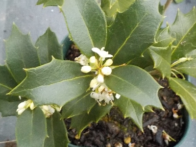
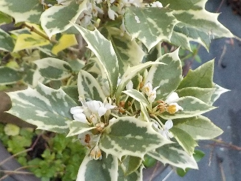
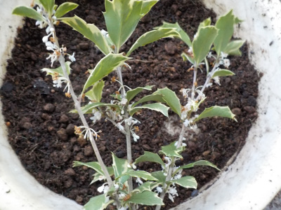
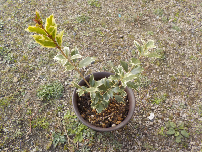
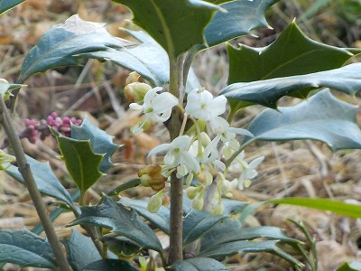
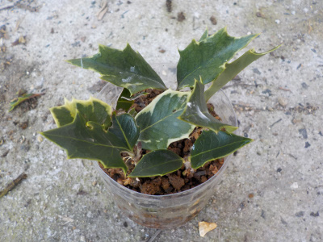
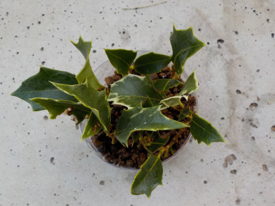

遊びで植物を育てよう
2024/12/01
緑色のヒイラギの方が花が目立ちますね。

緑の葉っぱだど白い花が目立ちますね。

斑入りだと目立ちません。
2本とも同じ木から採って挿し木したんですが、ずいぶん違う色になりました。
これくらい変化があると楽しい。
【柊TOP】
【木TOP】
【園芸TOP】
2023/11/26
ヒイラギの小さい花が沢山咲いてます。

大量に開花していますが、全然目立たないです。
考えてみると、この花から実が出来てるところを見たことないな。
【柊TOP】
【木TOP】
【園芸TOP】
2022/12/10
挿し木のヒイラギが大きくなったので植え替えしました。

1本挿し木のヒイラギの背が高くなったので、鉢を大きくしました。
ダイソーで2個110円で買ったものです。値段が安いのはいいですね。
ポットで育てたものが成長したら、この鉢にサイズアップするのが丁度いいと思いました。またダイソーに買いに行こうと思います。
【柊TOP】
【木TOP】
【園芸TOP】
2022/11/06
ヒイラギに小さい花が咲いていました。

ヒイラギの挿し木がちょっと成長して花が咲きました。
5本挿し木があるんですが、今回花が咲いたのはこの1本だけです。
同じDNAで同じ環境で育てていますが、違うものですね。
【柊TOP】
【木TOP】
【園芸TOP】
2021/01/31
ヒイラギの挿し木の途中経過です。

8月に挿し木した時とほとんど変わっていません。
変わらないってどうなの？
時間がたっているので何か変化するのが当たり前な気がするんですが。
不思議な植物ですね。
【柊TOP】 【木TOP】 【園芸TOP】
2020/08/30
ヒイラギを挿し木しました。

家に1本ヒイラギがあるんですが、予備があってもいいかなと挿し木しました。
新しい枝とかの小さい葉っぱは明るい色合いで綺麗なので、増やしてもいいかなと。
挿し木して思ったんですが、葉っぱ触ると痛いですね。
【柊TOP】
【木TOP】
【園芸TOP】
クリスマスに飾る西洋ヒイラギとは別物だそうです。
【おいしいものを食べよう。】【たくさん寝よう。】
【ソロ活をしよう!】【季節感のあることをしよう。】【動画視聴はほどほどに。】【当サイトの全てのコンテンツは無断転載禁止です。】